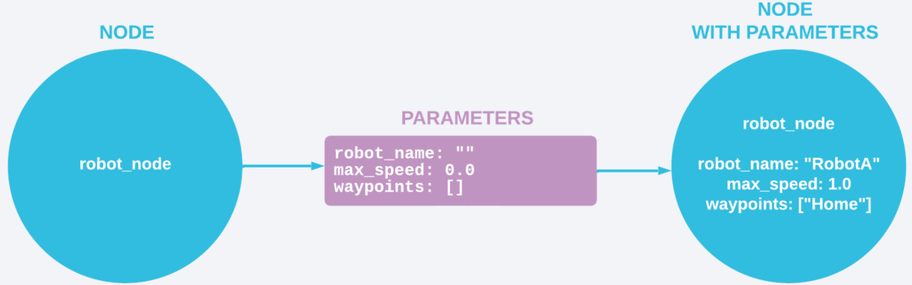
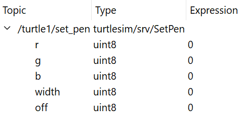

3.4. Parameters#
Parameters are something different to what we have been discussing thus far. They have to do with the information that nodes themselves store. Parameters can be thought of as a node’s settings. They have different types: integers, floats, booleans, strings, lists, and more. You have most likely seen these types from prior programming. However, if you have not heard of these types before, here is a quick rundown:
Integers: You standard integer on the number line (… -3, -2, -1, 0, 1, 2, 3 …)
Floats: Decimal values, used to represent more accurate values (1.00, 1.1, 2.53, -9.84, 6.7 …)
Booleans: Simple true or false values
Strings: Words, essentially a collection of consecutive letters. Can contain single letters. (“Hello!”, “aabbb”, “a”,)
Lists: A collection of items of the same type, ([1, 2, 3], [5.4, 4.06, -3.21], [“okay”, “here”])
Each of these parameters can mean different things in their own context!
 ROS2 Service Example (Courtesy of Foxglove)
3.5. How Parameters Work#
To actually make parameters, you first have to declare them through code. Then, values are passed in to these parameters through whatever command line you use or some other configuration file. Once you run the program, the simulation will then use and express the different unique paramaters provided. We will go into this more later on in this guide.
Parameters are incredibly important when you have two very similar robots that have the same general responsibilities, but need to go about their jobs in distinct ways. Parameters such as speed and waypoints are used to make these robots work properly, and of course we must give them different names too!
3.6. TurtleSim Example#
Below, you can see the parameters that exist in the SetPen node and their corresponding types in TurtleSim. r, g, b set color of the turtle’s trail, and the width parameter, surely enough, changes the width of said trail. uint8 is another parameter type, you will find that there are more types that exist other than the ones mentioned above.

Example of parameters in SetPen
3.7. Dynamic Reconfiguration#
In ROS2, parameters have this interesting property called dynamic reconfiguration. This is the ability for a node to change its parameters while it is running, essentially “on the fly”. You can change the value of any parameter mid-run and it would not cause a crash or error of any kind. For example, using the speed parameter mentioned from before, you can change the speed of a robot at any time while it is running and the system will dynamically adapt to that change. It is an incredibly useful feature in ROS2!
You will later find out that dynamic reconfiguration can be used to change the values of the parameters of the image above. As you are running TurtleSim, you can change of these values and see the changes in real time.